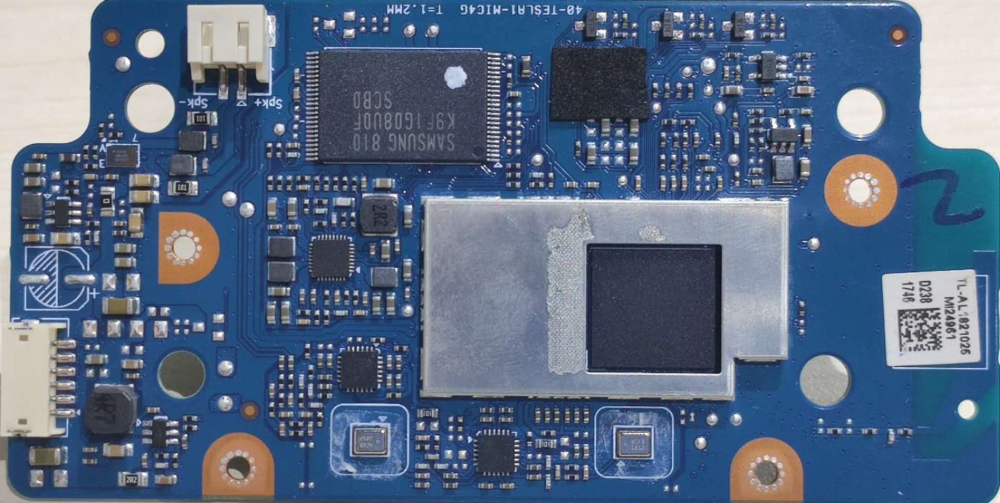
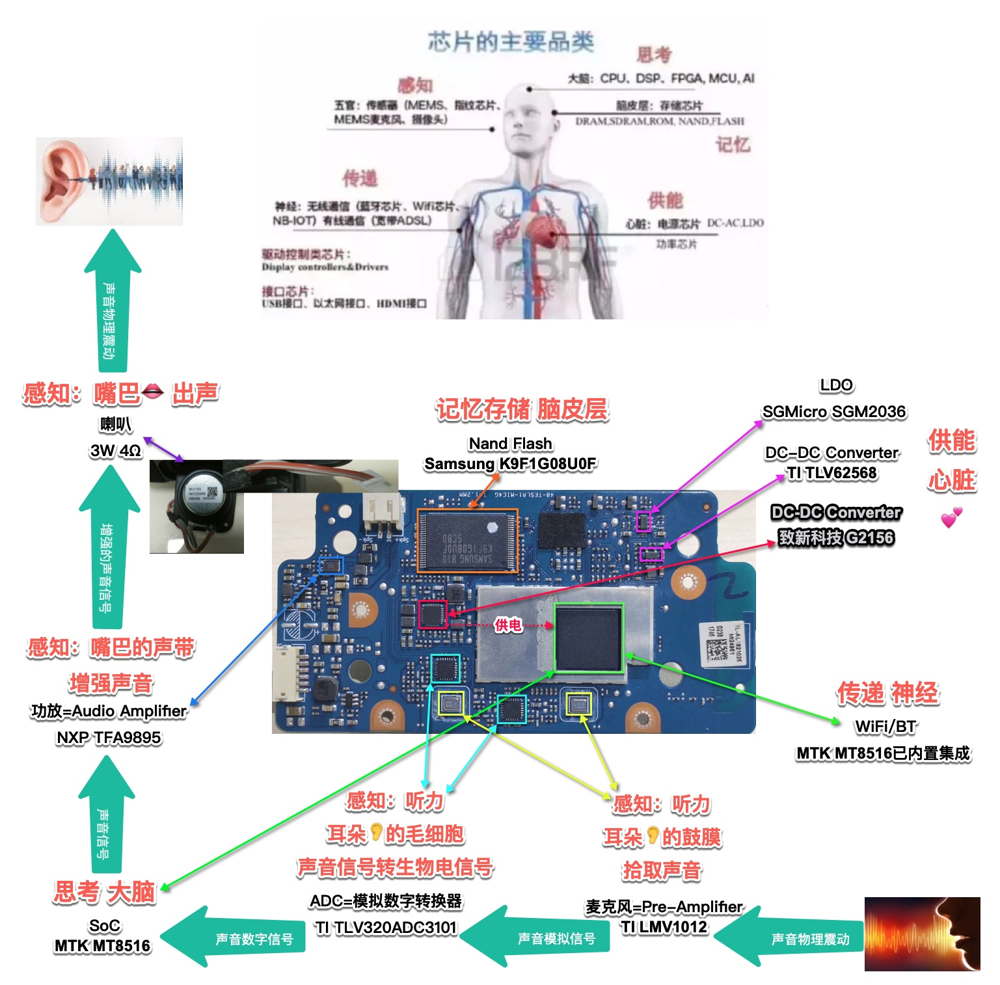
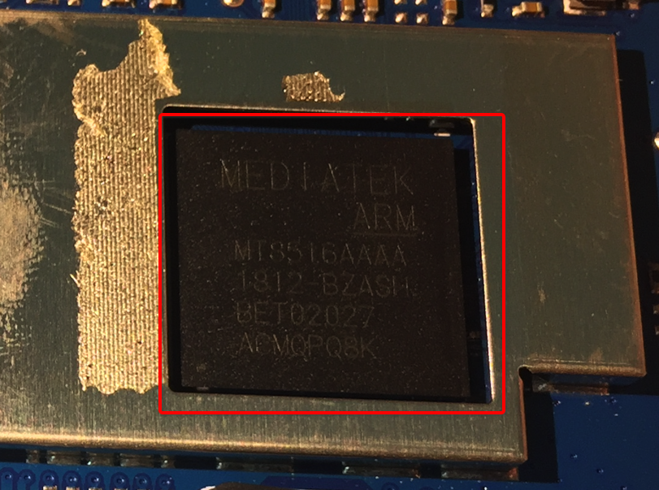
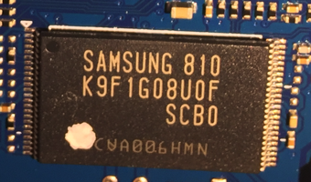
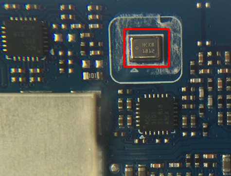
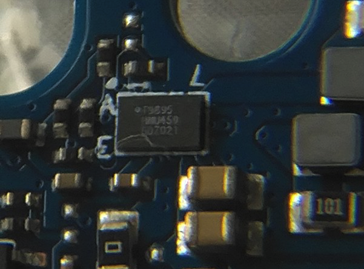
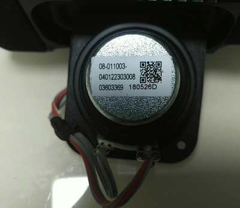
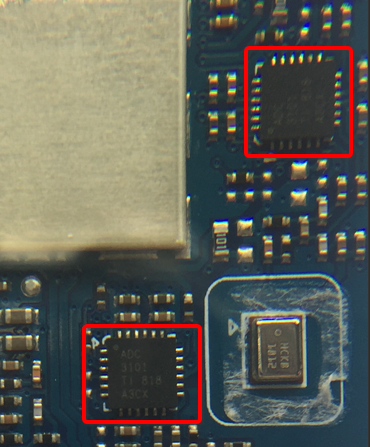
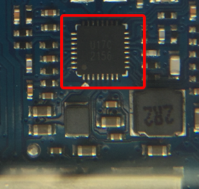
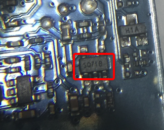

拆解报告和BOM
此处整理一下天猫精灵的方糖的拆解报告，以及分析出BOM物料清单。
对于拆解后的主电路板

下面详细整理BOM清单和芯片信息：
用人体类比天猫精灵方糖电路板上芯片功能
对应的芯片和功能，用人体去类比效果如下：

天猫精灵方糖的BOM物料清单
天猫精灵方糖的硬件拆解报告和BOM的详细参数是：
| 功能模块 | 电路板上标识Marking | 芯片和参数 | 备注说明 |
|---|---|---|---|
CPU=主控芯片=SoC |
 |
|
详见： 联发科MT8516 常见主控芯片 - MediaTeck MTK 联发科 芯片名词对比 |
| 存储芯片 |  |
|
存储芯片 Nand Flash Samsung K9F1G08U0F |
| 麦克风=收音麦克风=拾音麦克风=前置音频放大器 |  |
|
音频芯片 前置音频放大器 音频功率放大器 和 前置音频功率放大器 收音麦克风虽然只有两个，但是均经过深度定制的收音麦克风，效果也还不错，可以实现3米的拾音范围 |
| 音频功率放大器=功放 |  |
|
音频芯片 音频功率放大器 音频功率放大器 和 前置音频功率放大器 |
| 扬声器=喇叭 |  |
|
|
| 无线网络 |
|
||
| ADC=模拟数字转换器 |  |
|
|
| 降压转换器 |  |
|
同步整流降压转换器 致新科技 G2156 为主控芯片 MTK MTK8516供电 |
| 输出低压差稳压器 |  |
|
圣邦威电子 sgmicro的SGM2036 什么是降压变换器及为何需要降低电压 |